Vision statement
Our vision is to create a future where the Namib Desert in Namibia stands as a beacon of environmental resilience and serves as a model for sustainable conservation worldwide.
We envision a Namib Desert where the Namaqua chameleons thrive, their populations restored and their critical role in controlling the tenebroid beetle species ensured. A future where road users in areas such as the roads to Sesriem out of Walvis Bay and the Boshua Pass exit out of Swakop towards Langer Heinrich mine prioritize the safety and protection of these chameleons, understanding their significance to the delicate balance of the desert ecosystem.
In our vision, the Namib Desert becomes a living laboratory, where our research and monitoring efforts yield insights that guide effective conservation strategies. By understanding the impacts of climate change and other environmental factors, we contribute to the development of innovative solutions that safeguard the desert's micro fauna and flora, ensuring their resilience in the face of a changing world.
We aspire to inspire the youth to become environmental leaders and advocates, instilling in them a deep appreciation for the Namib Desert's beauty and fragility. Through our educative tourism and outreach programs, we empower young people with knowledge, fostering a sense of responsibility and a commitment to sustainable practices. These youth become the driving force behind the future preservation and stewardship of the Namib Desert, ensuring its protection for generations to come.
In our vision, Nameleon emerges as a trusted global leader in environmental conservation. By forging strong partnerships with local communities, government agencies, and stakeholders, we influence policies and practices that prioritize the sustainable management of natural resources and address the challenges posed by climate change. Our collective efforts lead to the adoption of holistic approaches and the integration of environmental conservation into every aspect of society.
Ultimately, our vision extends beyond the borders of Namibia. We aspire to inspire a global movement for environmental protection, where the lessons learned from the Namib Desert's conservation journey inform and guide efforts to preserve and restore fragile ecosystems worldwide. By demonstrating the power of collaboration, education, and sustainable practices, we strive to create a world where nature and humanity coexist in harmony.
Together, we can realize this vision and ensure the Namib Desert's enduring legacy as a testament to the triumph of environmental conservation and the boundless possibilities of a sustainable future.